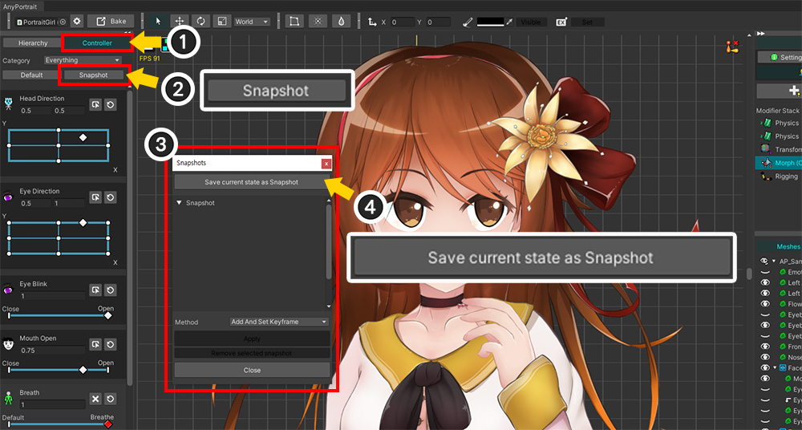
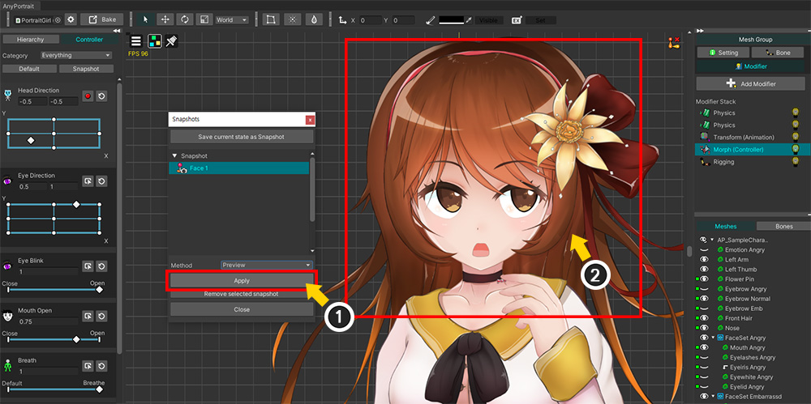
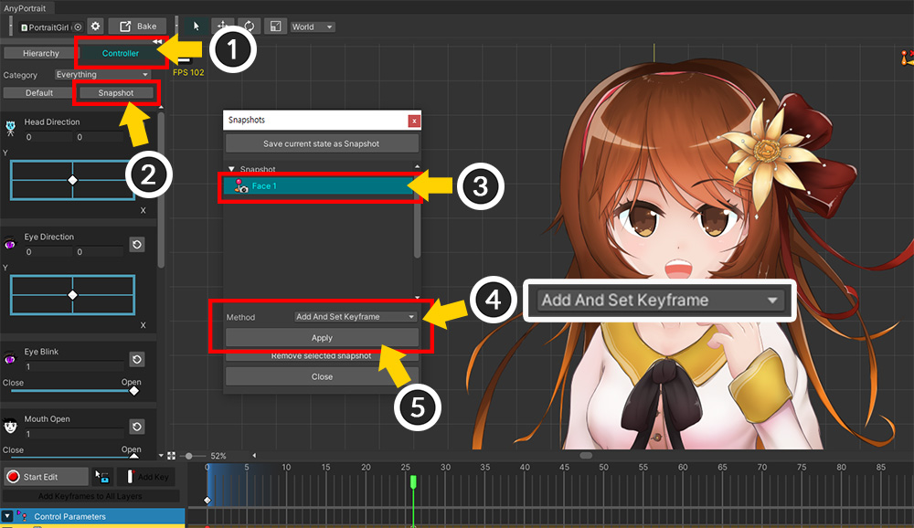
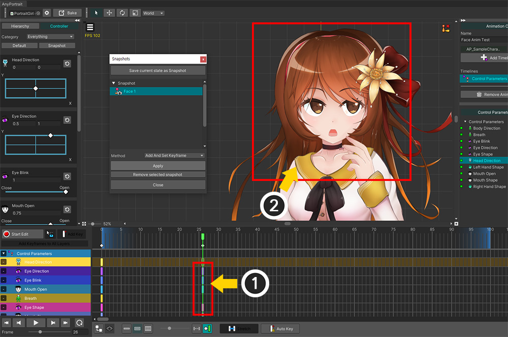

AnyPortrait > Manual > Control Parameter Snapshot
Control Parameter Snapshot
1.5.0
When working with a large number of control parameters, it can be convenient to save specific states of the control parameters.
Let's use the "Snapshot" function to change the control parameters to saved values.
Making a Snapshot

(1) This is a character that has a large number of control parameters created. Adjust the control parameters to make the state you want to save.

(1) Check the Controller tab is selected.
(2) Click the Snapshot button.
(3) A dialog box appears to save or apply the control parameter snapshot.
(4) Click the Save current state as Snapshot button.

A dialog box appears to save the current state of the control parameters as a snapshot.
The items in this dialog box are as follows:
1. Set the name of the snapshot.
2. Select the control parameters to save.
3. Select or deselect all control parameters.
4. Save or cancel.

(1) Set the name of the snapshot.
(2) Select the control parameters to save. You can make multiple selections by pressing Ctrl or Shift . You can select by pressing Select All or Deselect All.
(3) If you are done selecting, press the Select button. To cancel, press the Close button.

You can see the generated snapshot has been added to the list.
Note
To remove a snapshot, select the snapshot you want to remove and click the Remove selected snapshot button.
Applying the Snapshot
Let's apply a saved snapshot to change the values of control parameters in bulk.
The control parameter snapshot feature can be used in any situation where control parameters can be used, but this explanation assumes the situation where the Morph (Controller) modifier is used.

(1) Morph (Controller) modifier is selected.
(2) Press the Snapshot button.
(3) Select a saved snapshot.

(1) Click the Apply button.
(2) The character's appearance changes as the control parameters change to the values in the snapshot.
Creating keyframes while applying a snapshot
For animation, you can create and apply keyframes to the values of control parameters saved as snapshots.

(1) Select an animation clip.
(2) Add a Control Parameters timeline.
(3) Register the target control parameters to the timeline.
(4) Move the time slider to the position where you want to apply the snapshot.

(1) Select the Controller tab.
(2) Click the Snapshot button.
(3) Select the snapshot to apply.
(4) Change the value of Method to Add And Set Keyframe.
(5) Click the Apply button.
Note
- Preview option changes the value of the control parameter, but does not apply it to the keyframe.
- If the control parameter is not registered as a timeline layer, the snapshot is not applied.

(1) Keyframes were created on the layer of the control parameters that were saved in the snapshot.
(2) You can see that the snapshot was applied to the keyframes and the character's appearance changed.